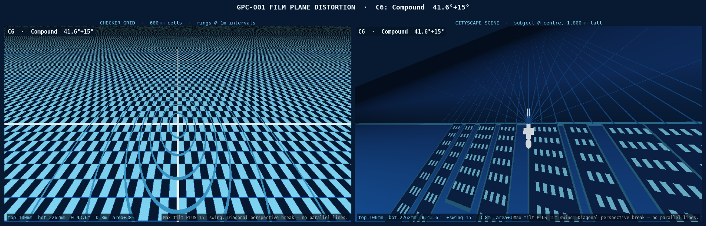

Moveable Film Plane — Mechanism Design & Optical Distortion Analysis¶
Overview¶
The Giant Pinhole Camera uses a 20ft ISO shipping container as its light-tight body. In the default configuration the photosensitive film plane is flush against one of the 20ft long-side walls. This report describes a view-camera-style moveable film plane — a mechanism with four independently actuated corners (TL, TR, BL, BR), allowing full tilt, swing, and compound tilt+swing movements comparable to a large-format view camera's rear standard.
The four-corner design replaces the earlier two-beam approach: rather than two rigid 5,893 mm horizontal beams (each locking left and right ends together), each corner carriage is driven by its own leadscrew. This unlocks the swing axis, making all five classical view-camera rear movements available.
Container Reference Geometry¶
| Dimension | Value | Notes |
|---|---|---|
| Interior length | 5,893 mm (19 ft 4 in) | Film plane spans this direction |
| Interior width | 2,362 mm (7 ft 9 in) | Optical axis = focal length |
| Interior height | 2,388 mm (7 ft 10 in) | Film plane height |
| Pinhole position | Centre of one 20ft long-side wall | |
| Nominal film plane | Opposite 20ft long-side wall | flush to wall |
| Structural ribs | Every 457 mm (18 in) along length | Rail mounting points |
Movement Axes¶
The four-corner mechanism supports all view-camera movements. Corners are labelled TL (top-left), TR (top-right), BL (bottom-left), BR (bottom-right) — where left/right refers to the 19 ft 4 in length direction and top/bottom to the 7 ft 10 in height direction.
| Axis | Corners Controlled | Max Travel | Effect |
|---|---|---|---|
| Tilt (top) | TL + TR together | 100–2,262 mm | Perspective convergence, keystone |
| Tilt (bottom) | BL + BR together | 100–2,262 mm | Perspective convergence, keystone |
| Swing (left) | TL + BL together | 100–2,262 mm | Left-right perspective skew |
| Swing (right) | TR + BR together | 100–2,262 mm | Left-right perspective skew |
| Compound | All 4 independently | 100–2,262 mm | Twisted plane — no lines remain parallel |
| Back focus | All 4 together | 100–2,262 mm | Uniform magnification change |
| Rise / Fall | All 4 together, offset vertically | ±200 mm | Horizon shift |
| Shift | All 4 together, offset horizontally | ±300 mm | Left/right perspective offset |
Maximum tilt angle (top vs bottom): arctan((2,262 − 100) / 2,388) ≈ 42°
Maximum swing angle (left vs right): arctan((2,262 − 100) / 5,893) ≈ 20°
(Swing angle is shallower than tilt because the container is 5,893 mm long vs 2,388 mm tall — the same depth difference produces a smaller angle over the longer dimension.)
When tilted at maximum, the film plane's physical height increases from 2,268 mm to approximately 3,180 mm — 40% longer than when flat. The backing panel accommodates this with the hinged two-panel system described below.
Mechanism Design¶
Four-Corner Frame¶
Each corner of the film plane frame rides on its own independent carriage assembly:
CEILING ─────────────────────────────────────────────────────────
[CEIL RAIL — LEFT] [CEIL RAIL — RIGHT]
corner TL (leadscrew A) corner TR (leadscrew B)
│ │
│ FILM PLANE FRAME │
│ 5,893 mm wide × 2,388 mm tall │
│ ROD-END BEARING each corner │
corner BL (leadscrew C) corner BR (leadscrew D)
[FLOOR RAIL — LEFT] [FLOOR RAIL — RIGHT]
FLOOR ───────────────────────────────────────────────────────────
- 4 linear rails — HiWin HGR20 profile, 2,200 mm length, one at each corner of the container interior (ceiling-left, ceiling-right, floor-left, floor-right). Rails run along the 2,362 mm optical axis direction.
- 8 carriages — HGH20CA flanged blocks, 2 per rail, joined by an L-bracket at each corner. Each corner moves as a single independent unit.
- 4 leadscrews — ¾"-6 Acme, 8 ft (2,438 mm) length, one per corner (TL, TR, BL, BR). Each turns in a bronze Acme nut fixed to the corner bracket.
- Film plane frame — welded 2"×2"×3/16" aluminium angle, 5,893 mm × 2,388 mm. Connected to each corner bracket via a rod-end spherical bearing (GIR25-DO or equivalent, 25 mm bore) to allow free rotation in all axes when the plane is twisted.
The critical difference from the two-beam design: without spanning beams, the left and right ends of the top edge (TL and TR) are completely independent. Setting TL to 800 mm and TR to 2,262 mm produces a 17.5° swing. Setting TL=100, TR=2262, BL=2262, BR=100 produces a compound twisted plane with no parallel lines.
Why Rod-End Spherical Bearings¶
In the two-beam design, simple pin joints at the beam ends sufficed because the beam constrained one rotation axis. With four-corner independence, the film frame can twist — the plane through the four corners is no longer flat. A simple pin joint has only one rotational degree of freedom; a rod-end spherical bearing has ±45° freedom in all axes, accommodating any combination of tilt and swing without binding.
Actuation¶
Each of the four leadscrews is turned by an 8" cast aluminium handwheel (¾" bore). One turn of the ¾"-6 screw = 4.2 mm travel. A SS316 locking collar on each screw holds position during exposure.
Named movement modes: - Pure tilt: turn TL and TR handwheels together by the same amount; turn BL and BR by the same amount (different from TL/TR). - Pure swing: turn TL and BL together; turn TR and BR together. - Back focus: turn all four handwheels by the same amount. - Compound: turn all four independently.
Optional electric actuation: replace the handwheels with Progressive Automations PA-14 12V linear actuators (20" / 508 mm stroke, 150 lb force rating). Four actuators, one per corner, each controlled by a panel-mount DPDT momentary switch. A labelled panel outside the container allows full repositioning without entry.
Variable Geometry Accommodation¶
As the film plane tilts (tilt axis), its along-plane height grows from 2,268 mm at 0° to approximately 3,180 mm at maximum 42° tilt. Swing has a smaller effect on plane size (the container is much longer than it is tall).
Hinged two-panel ACM system:
The backing panel is two equal ACM (aluminium composite material) sections, each ~1,600 mm × 2,388 mm, joined along the horizontal centreline with a full-width 2" aluminium piano hinge. When flat, the panels lie flush. As the plane tilts, the upper panel folds back on the hinge, maintaining full coverage at any tilt angle.
For compound tilt+swing, the film plane is a ruled surface (slightly twisted, not flat). The backing panels accommodate this because the hinge allows both fore-aft fold and a small amount of left-right twist.
Light Sealing¶
The tilted or swung film plane creates voids where it no longer contacts the container walls. These are sealed with:
- Primary seal: 1"×½" black EPDM foam strip bonded to all four edges of the film frame — compresses against walls at low angles
- Secondary seal: Rosco Duvetyne (professional blackout fabric) curtains attached to the film frame perimeter, hanging freely and weighted — drapes against the walls and floor for large angles
- Rail light traps: Three overlapping strips of black felt across each rail slot opening in the ceiling and floor panels
Tilt Configurations¶
| Config | Name | TL | TR | BL | BR | Tilt | Swing | Film Height |
|---|---|---|---|---|---|---|---|---|
| C0 | Flat | 2,262 | 2,262 | 2,262 | 2,262 | 0° | 0° | 2,268 mm |
| C1 | Mild tilt | 1,800 | 1,800 | 2,262 | 2,262 | 5.6° | 0° | 2,315 mm |
| C2 | Strong tilt | 800 | 800 | 2,262 | 2,262 | 17.5° | 0° | 2,598 mm |
| C3 | Max tilt | 100 | 100 | 2,262 | 2,262 | 41.6° | 0° | 3,121 mm |
| C4 | Mild swing | 2,262 | 1,800 | 2,262 | 1,800 | 0° | 2.1° | 2,268 mm |
| C5 | Strong swing | 2,262 | 800 | 2,262 | 800 | 0° | 11.0° | 2,268 mm |
| C6 | Max swing | 2,262 | 100 | 2,262 | 100 | 0° | 20.3° | 2,268 mm |
| C7 | Compound | 100 | 2,262 | 2,262 | 100 | 41.6° | 20.3° | — |
All depths measured from the pinhole wall.
The compound config (C7) places TL and BR at near position, TR and BL at far — a diagonal twist. The film plane is no longer a flat rectangle; it is a ruled surface. No lines in the scene project to straight parallel lines anywhere in the image.
Optical Distortion Analysis¶
Physics of Tilted-Plane Projection¶
In a pinhole camera, every scene point projects through the pinhole aperture onto the film plane. When the film plane is flat and perpendicular to the optical axis, the projection is standard central perspective:
film_x = −X · f / D
film_y = −Y · f / D
where f is the perpendicular distance from pinhole to film, and D is subject distance.
When the film plane is tilted (top edge at depth d_top, bottom edge at d_bot), the effective focal length varies continuously with height on the film:
f(v) = d_bot + (d_top − d_bot) · v (v = 0 bottom, v = 1 top)
When the film plane is swung (left edge at depth d_L, right edge at depth d_R), the effective focal length also varies with horizontal position:
f(u) = d_L + (d_R − d_L) · u (u = 0 left, u = 1 right)
In the compound case (tilt + swing simultaneously), the depth varies across the entire film surface as a bilinear interpolation of all four corner depths:
f(u, v) = d_BL·(1−u)(1−v) + d_BR·u(1−v) + d_TL·(1−u)v + d_TR·u·v
This varying effective focal length is the source of all the distortion effects described below.
Distortion Effects by Configuration¶
C0 — Flat (reference): Standard central projection. Vertical lines remain vertical, horizontal lines remain horizontal. The checker pattern is a regular perspective view.

C1 — Mild tilt 5.6°: Subtle keystone. The top of the image is slightly compressed. Useful for compensating converging verticals when photographing tall subjects close to the camera.

C2 — Strong tilt 17.5°: Dramatic keystone. Top of image has f ≈ 800 mm — three times more compression than the bottom. Buildings appear to flare outward toward the base.

C3 — Maximum tilt 41.6°: Extreme effect. Top edge 100 mm from pinhole wall — a 22× difference in effective focal length between top and bottom. The checkerboard transforms from squares at the bottom to near-horizontal slivers at the top.
Recommended for: wide open landscapes, aerial-perspective scenes, dramatic urban canyons.

C4 — Maximum tilt down (reverse) 41.6°: The inverse of C3. Ground plane is compressed, sky dominates. Standing subjects elongate dramatically toward the bottom of the frame.

C5 — Both edges near (uniform close): The entire film plane is 100 mm from the pinhole. Effective focal length drops from 2,362 mm to ~100 mm — a 23.6× reduction. Field of view becomes enormous.

C6 — Compound tilt + swing: Maximum vertical tilt combined with 15° horizontal swing. No line in the scene remains parallel to any edge of the film. The checker pattern becomes a complex curved mesh.
Recommended for artistic use.

Summary Comparison¶
All seven configurations on a checker grid (D = 8,000 mm):

Engineering Drawings¶
| Sheet | Content |
|---|---|
| Sheet 1 — Plan view | Top-down: 4-corner rail layout, film plane quad for each config; tilt hidden (into page), swing visible as diagonal |
| Sheet 2 — Elevations | Left: side elevation showing tilt; Right: ceiling cross-section showing swing |
| Sheet 3 — Hardware detail | Corner bracket assembly, HGR20+HGH20CA cross-section, rod-end spherical bearing, ACM panel hinge |
| Sheet 4 — Specification table | All movement axes, 4-corner config table, full bill of materials |


Shopping List¶
All items ship within the United States. Local Southern California pickup noted where available.
Structural & Rails¶
| Item | Spec | Qty | Source A | Source B | Est. Unit |
|---|---|---|---|---|---|
| Linear guide rail HGR20 | 2,200 mm | 4 | Automation Overstock, Gardena CA | McMaster-Carr #5901T777 | $45 |
| Rail carriage HGH20CA | Flanged block | 8 | Automation Overstock / Amazon | McMaster-Carr | $18 |
| Acme leadscrew ¾"-6 | 8 ft length | 4 | Roton Products (LA area) | McMaster-Carr #6289K36 | $95 |
| Acme nut bronze ¾"-6 | — | 4 | Roton Products | McMaster-Carr #6289K512 | $12 |
| Handwheel 8" dia | ¾" bore, cast aluminium | 4 | Grainger (Anaheim / LA / SD) | McMaster-Carr #6440K64 | $35 |
| Locking collar SS316 | ¾" bore | 4 | McMaster-Carr #6436K12 | Fastenal (SoCal) | $12 |
| Corner bracket L-plate | ¼" alum. plate, 6"×8" | 4 | Metal Supermarkets SoCal | Online Metals | $20 |
| Rod-end spherical bearing | GIR25-DO or equiv., 25 mm bore | 8 | McMaster-Carr #60645K73 | Amazon Industrial | $22 |
| Pivot pin SS316 | 1" dia × 8" long | 8 | McMaster-Carr #98173A150 | Fastenal (SoCal branches) | $8 |
Items in bold changed quantity vs the earlier two-beam design. The two 5,893 mm T-slot beams have been removed.
Film Plane Frame¶
| Item | Spec | Qty | Source A | Source B | Est. Unit |
|---|---|---|---|---|---|
| Aluminium angle 2"×2"×3/16" | 8 ft lengths | 10 | Metal Supermarkets SoCal | Online Metals | $22 |
| Dibond ACM panel 4 mm | 4 ft × 8 ft sheets | 6 | Grimco, City of Industry CA | Signwarehouse | $85 |
| Black EPDM foam tape 1"×½" | 50 ft rolls | 3 | McMaster-Carr #8614K84 | Grainger | $28 |
| Rosco Duvetyne | 60" wide, 10 yd | 1 | B&H Photo | Rosco direct | $95 |
| Aluminium piano hinge 72" | 2" wide, 1/16" leaf | 2 | McMaster-Carr #1580A51 | Grainger | $28 |
| 6-mil black poly sheeting | 10 ft × 100 ft | 1 | Home Depot (local, all SoCal) | Uline | $65 |
| 2" black Gorilla Tape | 35 yd rolls | 6 | Home Depot / Target (local) | Amazon | $12 |
Optional Electric Actuation¶
| Item | Spec | Qty | Source A | Source B | Est. Unit |
|---|---|---|---|---|---|
| PA-14 linear actuator | 12V, 20" stroke, 150 lb | 4 | Progressive Automations | Amazon | $185 |
| 12V 30A power supply | Enclosed | 1 | Mouser | Digi-Key | $55 |
| DPDT momentary rocker | Panel-mount, 20A | 4 | Mouser | Grainger | $8 |
*Estimated materials total (manual actuation): ~\(2,400** *Excludes fasteners, fabrication labour, and electric actuation option.* *Net change vs two-beam design: removed 2× T-slot beams (–\)416), added 2 leadscrews +\(190, 2 handwheels +\)70, 4 rod-end bearings +\(88, 4 corner brackets +\)80, 2 locking collars +\(24 → net +\)36.
Local SoCal Metal Sourcing¶
- Metal Supermarkets — Anaheim (714-630-8463), Van Nuys (818-988-1301), San Diego (619-280-7600). Will cut to length on-site, no minimum order.
- Grimco — City of Industry, CA. Sign-industry ACM panel supplier, large sheet stock.
- Automation Overstock — Gardena, CA. Industrial surplus linear motion components; walk-in available.
- Grainger — branches throughout LA, Orange County, San Diego. Same-day local pickup.
- Roton Products — ships from the LA area; Acme screw stock cut to length.